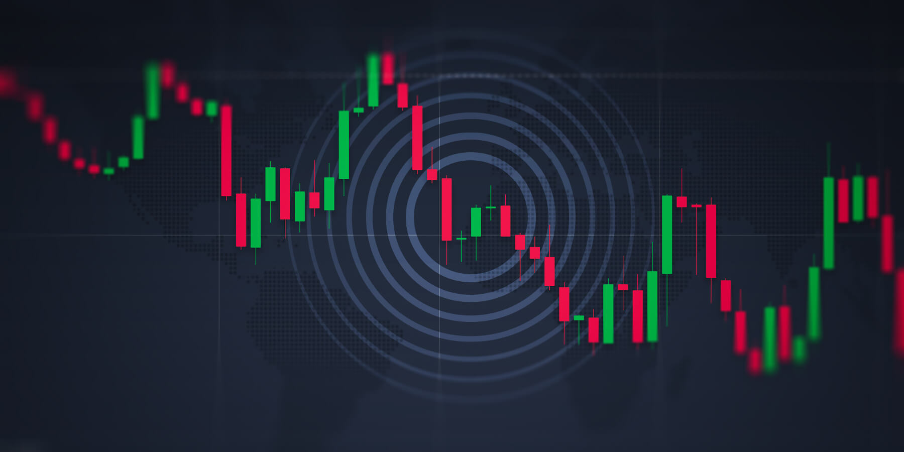

Qué és el trading?
En el mercat de valors, el trading es la especulacio sobre
instruments financiers amb l'objectiu de obtenir un benefici. El
trading es basa prinicpalment en l'anàlisi tècnic, l'analisi
fundamental i en l'aplicació d'una estratègia concreta per operar.

Qui es pot dedicar al trading?
Al trading com a qualsevol altre treball, s'hi pot dedicar qualsevol
que tingui els coneixements necessaris. Per ser trader no és
diferent, cal formarte, crear la teva estratègia i aplicar-la en un
compte amb diners ficticis. Si has guanyat diners en aquest compte,
ja et pots iniciar com a trader professional.